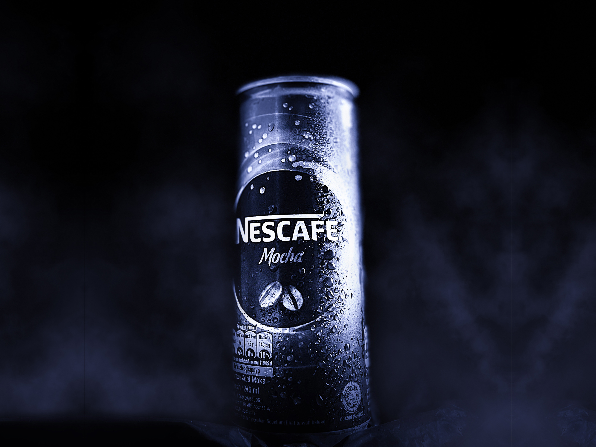

My Projects

One of buildings with an aesthetic shape. Located in Farm House, Lembang, West Java.

Framing is one of photos technique. This photo was taken in Lampon Beach, Banyuwangi, East Java.

Sunset is one of best moment to take a photos. Located in Pulau Merah Beach, Banyuwangi, East Java.

Ceramic crafts such as glass and plate. Taken this photo in Farm House, Lembang, West Java.

I give a splash of water to make it look fresher and I took this photo in handmade mini studio.